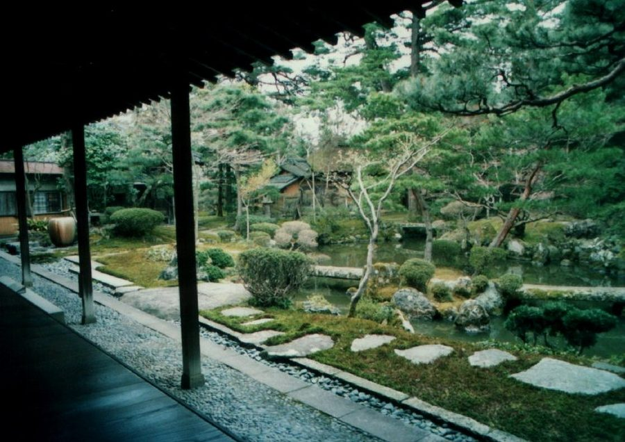
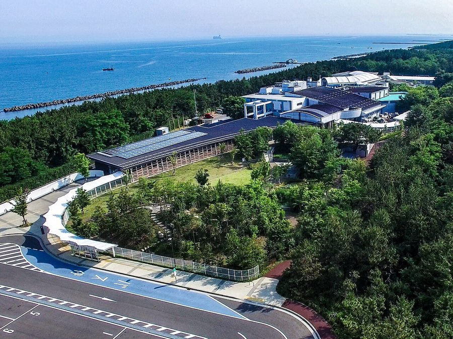

新潟県新潟市のソフトクリーム・ジェラート・かき氷（53件）
寄り道スポット検索アプリ「ヨッテコ」の収録データから、新潟県新潟市のソフトクリーム・ジェラート・かき氷を営業時間・料金つきで一覧にしました（2026年8月時点）。
最も遅くまで開いているのはヨルノアイス（23:00まで）。
新潟県新潟市はどんなまち？
数字で見る🔍新潟県新潟市
まちの横顔


- 地形と気候: 越後平野に位置し、信濃川と阿賀野川が日本海に流れ込むまちです。流域には低湿な平野と数多くの潟湖が、海岸沿いには新潟砂丘が形成され、鳥屋野潟・佐潟・福島潟などの潟湖が今も残ります。佐潟は1997年にラムサール条約登録湿地となりました。可住地面積は日本の市で最大の670.72km²です。気候は温暖湿潤気候(Cfa)で豪雪地帯に指定されますが、西方の佐渡島が雪雲を遮る「佐渡ブロック」により、県内の柏崎市や長岡市と比べると降雪量は少なめです。
- 港町としての歩み: 1889年の市制施行で誕生した、日本で最初の市の一つです。信濃川河口部には古くから港が開かれ、江戸時代には新潟湊が北前船の西廻り航路の寄港地としてにぎわい、長岡藩領地から天領となりました。幕末には日米修好通商条約の開港五港の一つに新潟港が指定されています。1980年代の上越新幹線・北陸自動車道の開業で首都圏へのアクセスも向上し、水陸交通の要衝としての役割を続けています。
- 「水の都」の景観と文化: 1950年代まで、信濃川左岸の新潟島中心部には堀が張りめぐらされ、柳が植えられていました。そのため「水の都」「柳都(りゅうと)」の名で紹介されることがあります。萬代橋、NEXT21、朱鷺メッセ、デンカビッグスワンスタジアム、新潟日報メディアシップがまちのシンボル的存在として知られています。また、高橋留美子をはじめ多数の漫画家を輩出していることでも知られます。
寄り道充実度（全国偏差値）
偏差値・順位は、ヨッテコ収録データ（2026年8月時点・26,033件）を市区町村別に集計した施設数の全国分布（1,728市区町村）から毎回算出しています。カードを押すとカテゴリ別の分析に切り替わります。
アイスから見た新潟県新潟市
市内のアイスのお店は53件、全国11位タイ（上位0.6%）。——食べ比べができるだけの店数がある。
- 13%——かき氷の割合は、全国の16%に届きません。かき氷が目当てなら、店を絞って向かうことになりそうです。
- 45%の店がアイスクリームを扱います。全国水準は39%です。江戸時代に日米修好通商条約の開港五港の一つに指定された新潟港を擁し、「水の都」「柳都」と呼ばれてきた市。選択肢の幅が、45%という数字に表れています。
- ジェラートを出す店は38%、全国水準（14%）の2.7倍。素材を選んで作る一杯が、選択肢に入りやすいまちです。
出典: 施設データ=ヨッテコ収録データ（26,033件・2026年8月時点）。偏差値・全国順位・全国水準は全1,728市区町村の分布から毎回算出。 / 人口=総務省「住民基本台帳に基づく人口、人口動態及び世帯数」（2026年1月1日現在） / 面積=国土地理院「全国都道府県市区町村別面積調」（2026年4月1日時点） / 森林率=農林水産省「2025年農林業センサス（農山村地域調査）」市区町村別林野率（2025年、林野率（林野面積÷総土地面積）） / 年平均気温=気象庁「平年値（1991-2020年）」。市区町村の代表点（国土交通省「大字・町丁目レベル位置参照情報」）から最も近い観測点の値 / まちの解説=日本語版Wikipedia「新潟市」（https://ja.wikipedia.org/wiki/新潟市、2026年8月21日取得、CC BY-SA 4.0）より作成 / 写真=Wikimedia Commons（各キャプションに作者・ライセンスを記載）
曜日別の営業施設数
| 月 | 火 | 水 | 木 | 金 | 土 | 日 |
|---|---|---|---|---|---|---|
| 41 | 38 | 44 | 46 | 49 | 47 | 45 |
火曜日が最も休みが多く（各11件が定休）、年中無休は25件です。※営業時間データのある49件で集計
施設一覧
| 施設 | 営業時間 |
|---|---|
| (株)塚田牛乳 ソフト | 09:00〜17:00（土・日休） |
| BAY STANDARD by SUZUKI COFFEE ソフト | 10:00〜18:30 |
| Gecko ソフトクリーム ソフトアイス 2025年3月15日開業。カフェ「MICICOCO(ミチココ)」の店主が手掛けた2号店で、特製ソフトクリームがメイン。竹… | 10:00〜16:00（月・火休） |
| Gelateria caffe Vivace ジェラートアイス | 11:00〜18:00（火休） |
| Guilt-free Gelateria CLOVER アイス | — |
| Hi7'sICECREAM アイス | — |
| KIRICAFE & KIRIKAGU ジェラートアイス 自家製ジェラートを提供するカフェ。素材本来の味わいを大切にしたジェラートを作り、桐の家具の展示販売も行う。 | 10:30〜19:00 |
| MILK CAFE ソフト レガーロ店内のミルクカフェ。自家農園・フジタファームの牧場牛乳を使ったソフトクリームやアフォガート、挽き立てエスプレッソ… | 10:00〜16:30 |
| OWL the Bakery ソフトジェラートアイス | 09:00〜18:00（火休） |
| R+cafe ソフトアイス リージェンス・ウェディングマナーハウス内カフェ。米粉の和三盆チュロスやミルクソフトクリームを提供。鳥屋野潟公園や図書館、… | 10:00〜19:00 ※曜日により異なる |
| Taibow! coffee＆gelato soft ソフトジェラート | — |
| YASUDA YOGURT CoCoLo新潟店 ソフト 直営ショップで工場生産のヨーグルト製品を販売。新潟県産生乳57%使用のミルクリッチなアイスクリームやソフトクリーム、オリ… | 10:00〜20:30 |
| gelateria hitosaji ジェラートアイス | 11:00〜17:00 ※曜日により異なる |
| お箸の国のジェラート ラト•リーチェ ジェラート | 11:00〜17:00（月・火休） |
| お茶の井ヶ田 喜久水庵 イオンモール新潟亀田インター店 ソフト | 10:00〜21:00 |
| そら野テラス ソフトかき氷 | 09:00〜19:00 |
| たまごsweets cafe 中条たまご 直売店 ソフトかき氷 新潟市内に立つ卵専門店。専用農場で朝一番に採れた葉酸配合の卵を使用し、ソフトクリームを提供。新潟の名所、ビッグスワンの近… | 09:30〜18:30 |
| なかの牧場なちゅらるじぇらーと ジェラートアイス | 10:30〜17:00（火休） |
| もも太郎ハウス アイス セイヒョー直営のアンテナショップ。新潟名物「もも太郎」を含むセイヒョーのアイスが勢ぞろい。工場に隣接した立地。 | 10:00〜16:00（月・日休） |
| やまとやパーラー ソフトかき氷 | 09:30〜19:00（木休） |
| よりみちジェラート小葉 アイス | 10:00〜15:00 ※曜日により異なる |
| わくわくファーム 豊栄店 ソフト | 07:00〜19:00 |
| エフケーメゾン 新潟ジェラート&パイ専門店 ジェラート 新潟市中央区古町にある、居酒屋「喜ぐち」の2代目店主がコロナ禍の2020年に開いたジェラートとパイの専門店。昼は「FKm… | 12:00〜18:00（月休） |
| カフェ ド レティ ソフト | — |
| カフェダンデライオンのおやつ工房 ソフトジェラート | 11:30〜18:00（水休） |
| カフェロブ 新潟店 ソフト | 11:00〜16:00（月・火休） |
| キタマエカフェ ソフトジェラートアイス | 10:00〜18:45 |
| クレール ジェラート | 07:00〜18:30（月休） |
| ジェラテリア Popolo ジェラートアイス 新潟市水族館マリンピア日本海の斜め向かいにある、25年間愛される老舗ジェラート専門店。無添加・天然素材にこだわり、食材は… | 10:00〜18:00 |
| ジェラテリア ニココ アイス | 11:00〜17:00（火・水休） |
| ジェラート＆カフェＹＯＳＨＩＤＡ ソフトジェラートアイス | 10:30〜18:00 |
| ハナタバ ジェラートアイス | 11:00〜17:00 |
| ハングルーズ ピアBandai店 ソフトアイス | 10:00〜16:00 |
| フジタファームセールス ジェラート | 10:00〜17:00（土・日休） |
| フルーツカフェ ジェラートかき氷 | 10:00〜17:00 |
| ヤスダヨーグルトベーカリーLECHE ソフト 自家製天然酵母「ヨーグルト種」を使い、厳選した国産小麦粉や生乳からつくられるヨーグルトや発酵バターを提供。新潟県産生乳5… | 11:00〜17:30（水休） |
| ヨルノアイス アイス | 16:00〜23:00 |
| レガーロ ソフトジェラートアイス フジタファーム直営のジェラート専門店。新鮮な牛乳を使い、毎日8〜18種類のジェラートを揃える。新潟・西蒲区の大地からの贈… | 10:00〜18:00 |
| 加勢牧場 ソフトジェラートアイス 長岡市の加勢牧場が新潟伊勢丹地下1階に出店する直営店。加勢牧場公式サイトの店舗一覧(わしま本店・新潟伊勢丹店・刈羽店の3… | 10:00〜19:00 |
| 和風ジェラートおかじ ジェラートアイス 村上のほうじ茶やきなこ、塩麹など和素材を使ったジェラート専門店。元自衛官の店主が2012年に開業。 | 10:00〜18:00（月休） |
| 喫茶UKIHOSHI ソフト | 09:30〜18:00 ※曜日により異なる |
| 季節のくだもの 団吉氷店 かき氷 | 11:00〜18:00（火・水休） |
| 小森豆腐店 下本町店 ソフト | 10:00〜18:00（日休） |
| 山田七蔵茶舗 アイス | 08:00〜19:30 ※曜日により異なる |
| 峰村醸造直売店 ソフト 味噌・漬物・甘酒を中心に扱う峰村醸造の直売店。ソフトクリームも提供 | 10:00〜17:00 |
| 温泉カフェわかば ソフト | 11:00〜21:00 |
| 牛のコーヒー アイス | 11:00〜18:00（月・火休） |
| 米持文四郎商店 ソフトかき氷 | 10:00〜17:00 |
| 茶屋なごみ処 みらいや ジェラートかき氷 | 11:00〜17:00 |
| 道の駅 豊栄 売店 ソフト | 07:00〜17:00 |
| 道の駅新潟ふるさと村 cafe花畑 ソフト 道の駅新潟ふるさと村内のcafe花畑。雪室で熟成させた珈琲豆を使用した「雪室珈琲ソフトクリーム」限定販売。 | 09:30〜17:00 |
| ＬＯＧ ＣＯＦＦＥＥ ソフト | 10:00〜18:00（水休） |
| ｼﾞｪﾗｰﾄ🍨サリーレ アイス | 10:30〜17:00 |